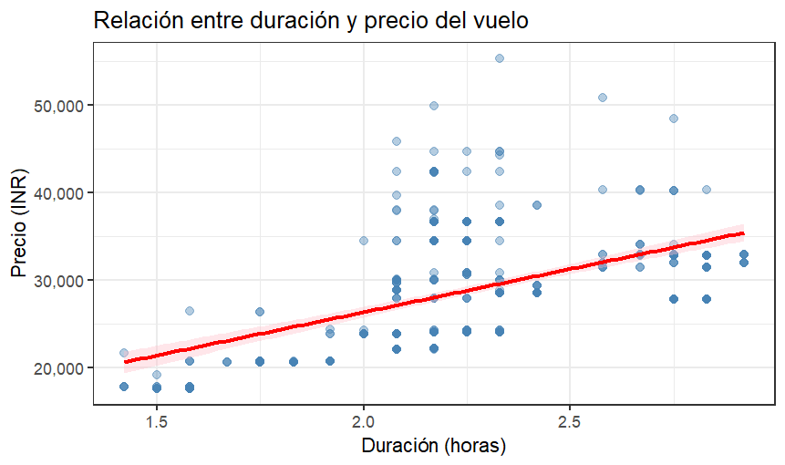
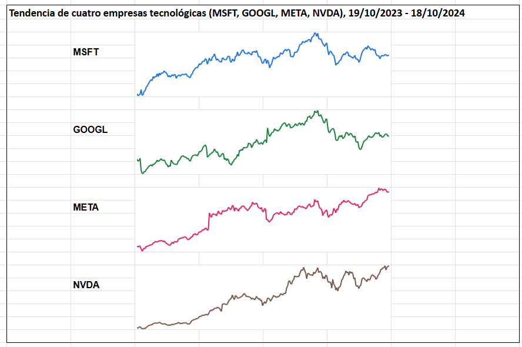
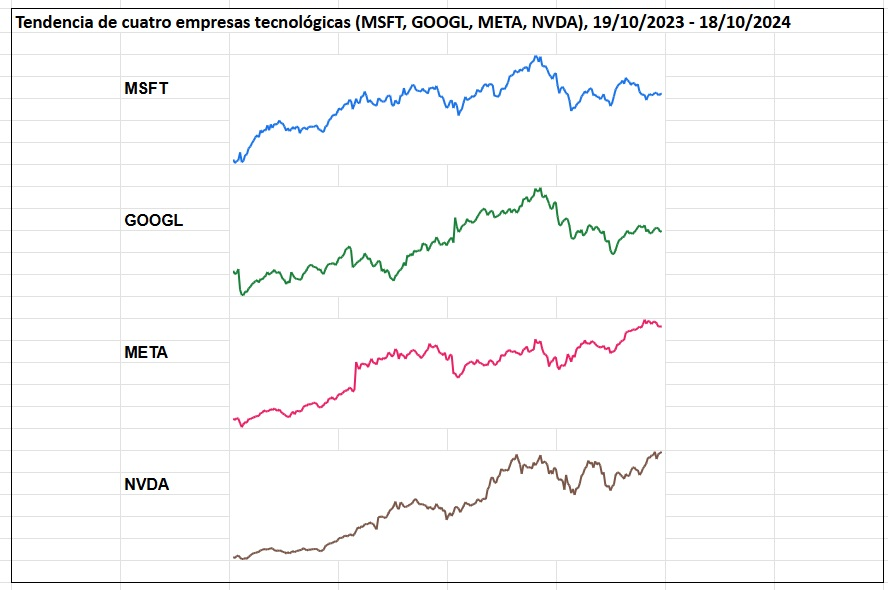

PEC 2 · Visualización de datos · Máster Universitario en Ciencia de Datos, UOC · Ander Gorocica

Fuente: Flight Price Prediction (Kaggle)

Fuente: ISO-3166 Countries with Regional Codes (GitHub)

Fuente: Multiple Stock Prices by Industry (Kaggle)